I am a freelance 2D digital character artist and designer and a Digital Media Art student at San Jose State University.
I've drawn and loved creating art for a really long time but have begun to take digital illustration more seriously over the past few years.
Alongside continually working to improve my basic illustration skills, I've recently been pursuing ways to augment my 2D drawings, presently through 2.5D animation using Live2D, After Effects, and other digital tools.
art
......

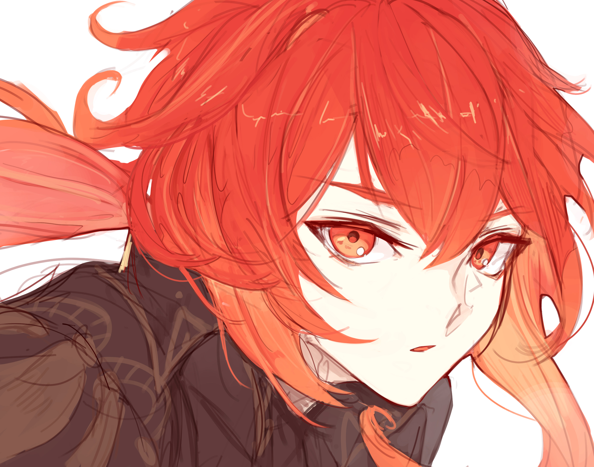
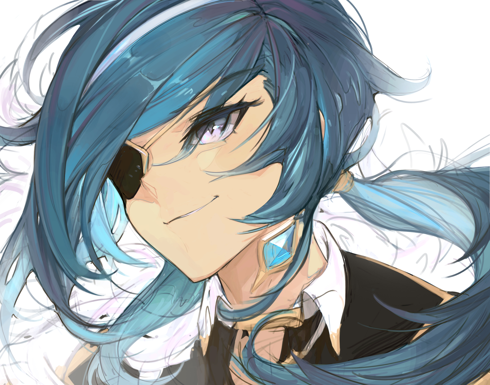
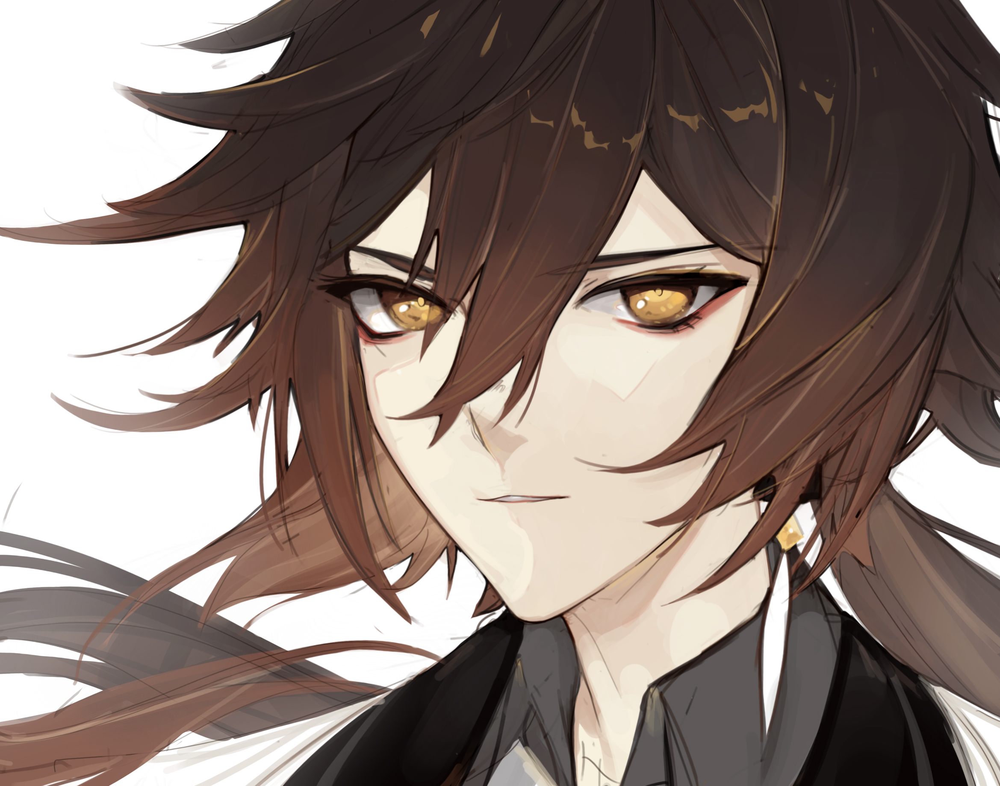
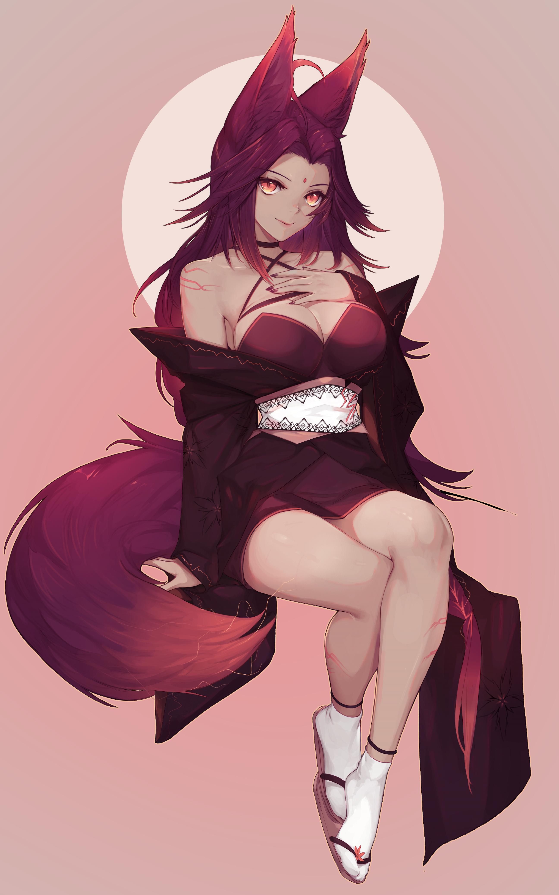
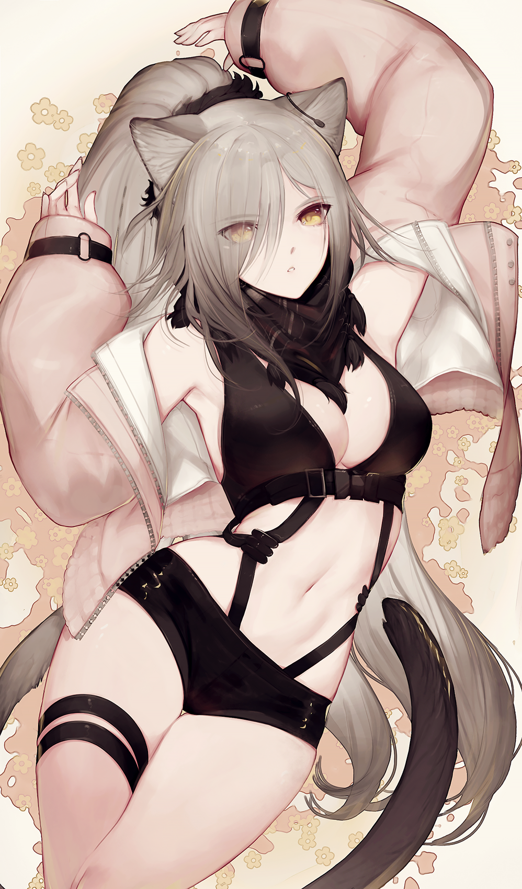
 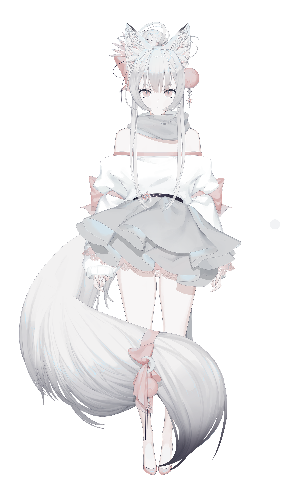
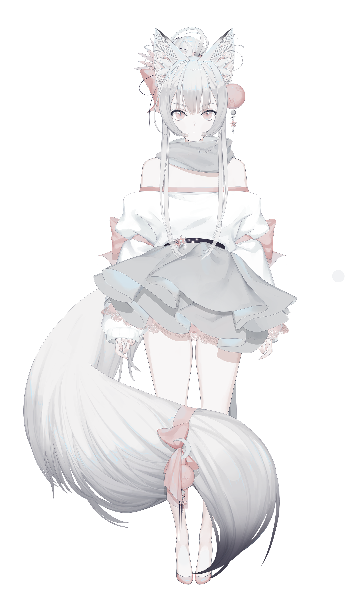
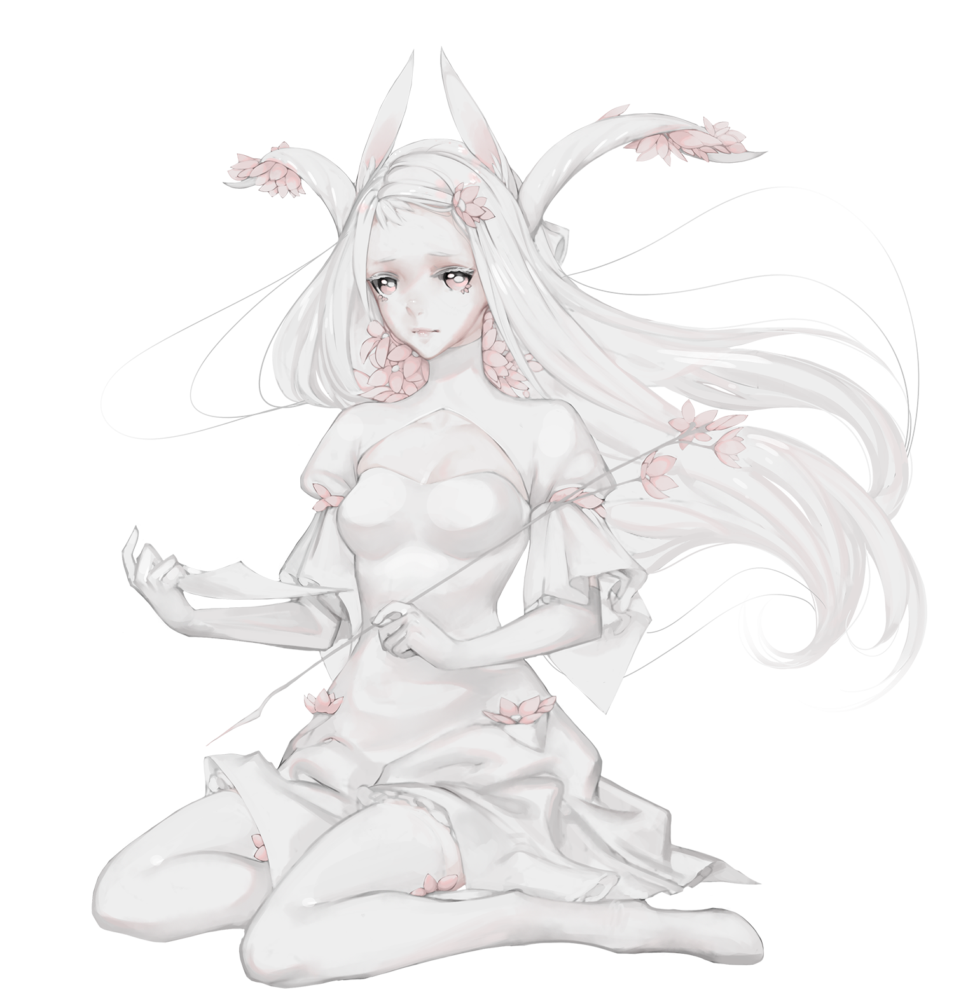
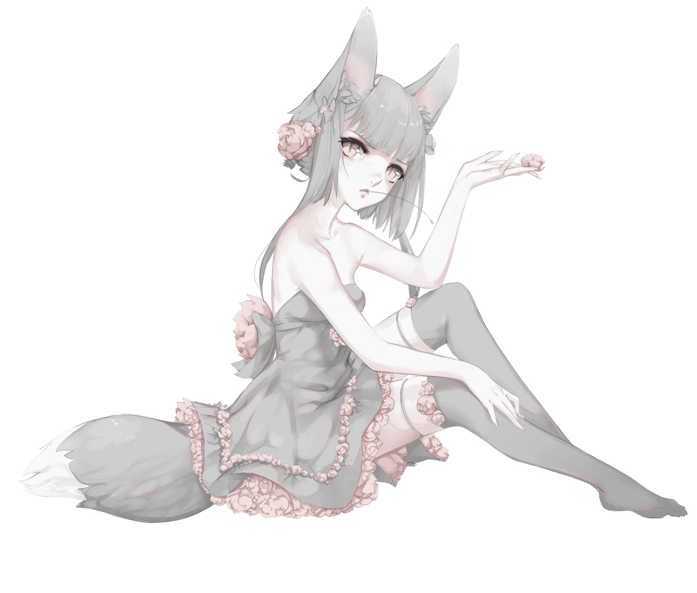
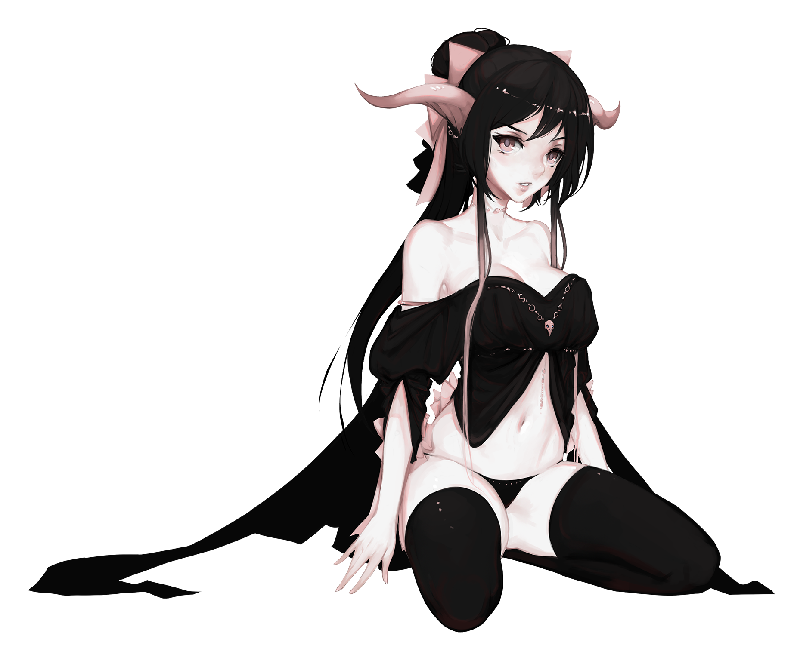
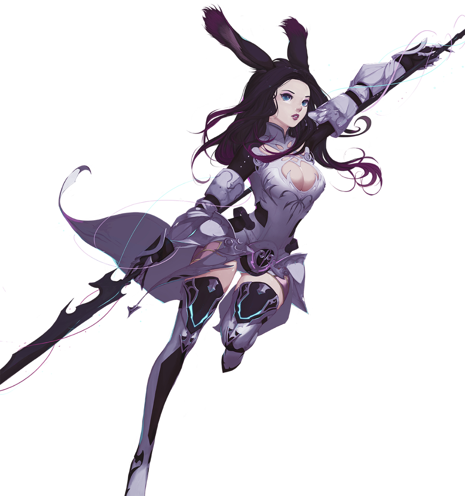